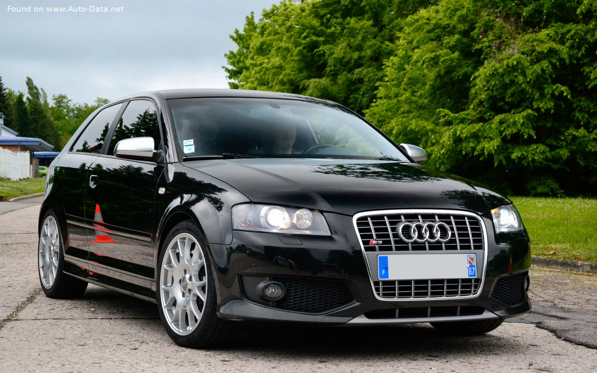

Audi S3 8P (2005)
Technické specifikace:
- Motor: 2.0 TFSI, 4 válce
- Výkon: 265 koní (195 kW)
- Zrychlení 0-100 km/h: 5.7 sekundy
- Maximální rychlost: 250 km/h
- Spotřeba: 8.5 l/100 km
- Cena: 600 000 CZK
Vybavení:
- Adaptivní bi-xenonová světla
- Sportovní sedadla s Alcantarou
- Systém Audi Drive Select
- Sedadla s elektrickým nastavením
- Sportovní podvozek
Model Audi S3 8P z roku 2005 je ideální volbou pro fanoušky sportovních vozů s vynikajícími jízdními vlastnostmi a špičkovou technologií.